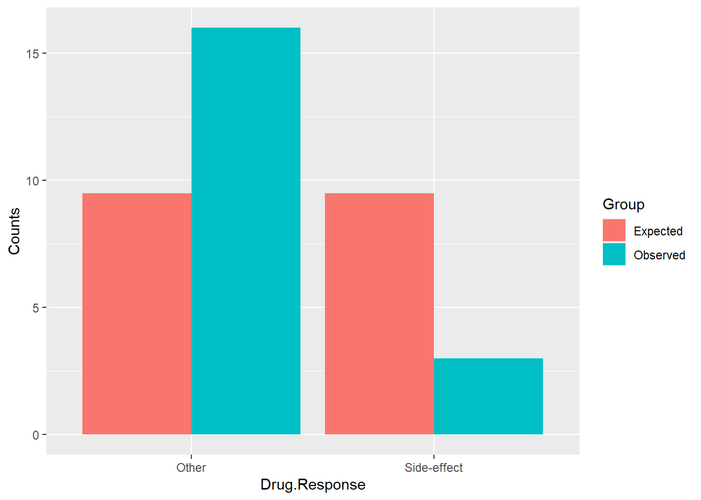
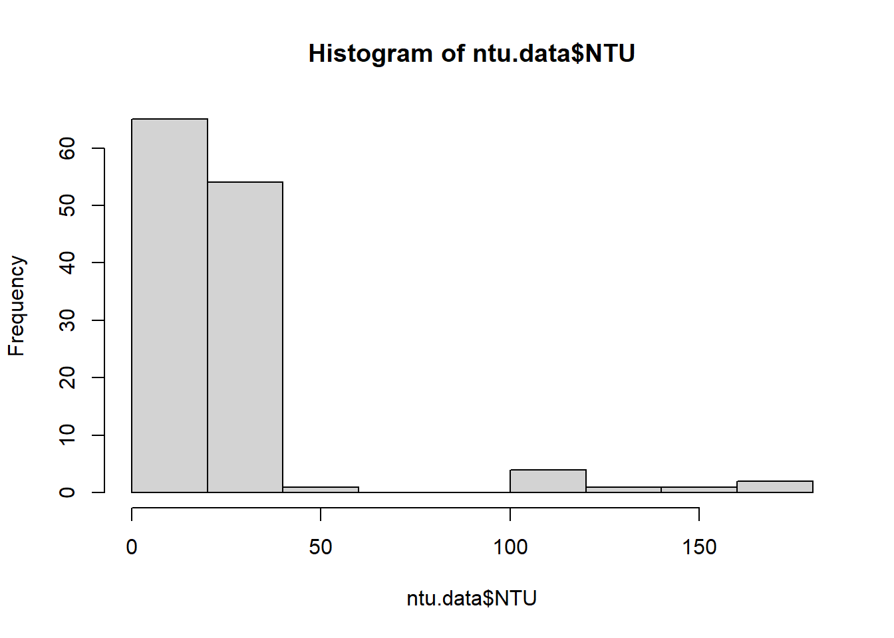
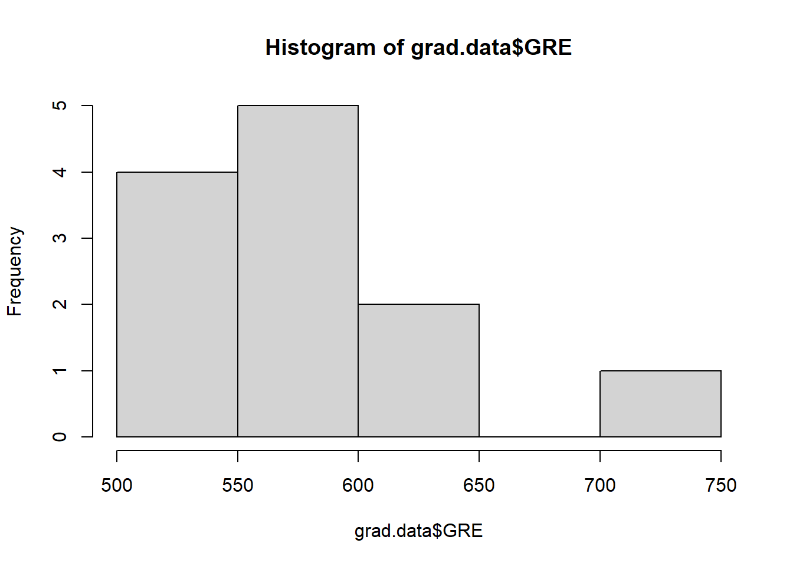
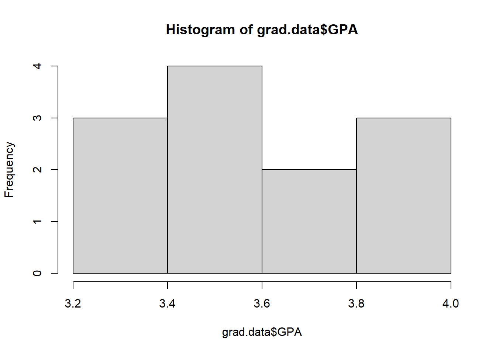
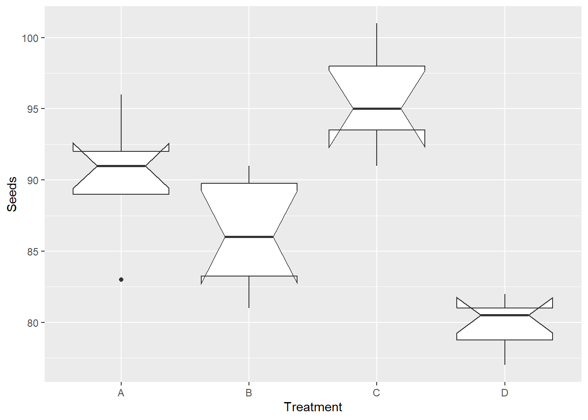
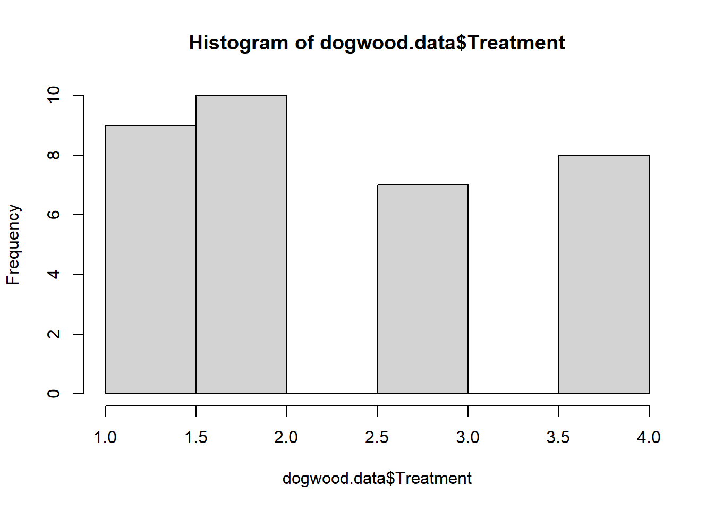
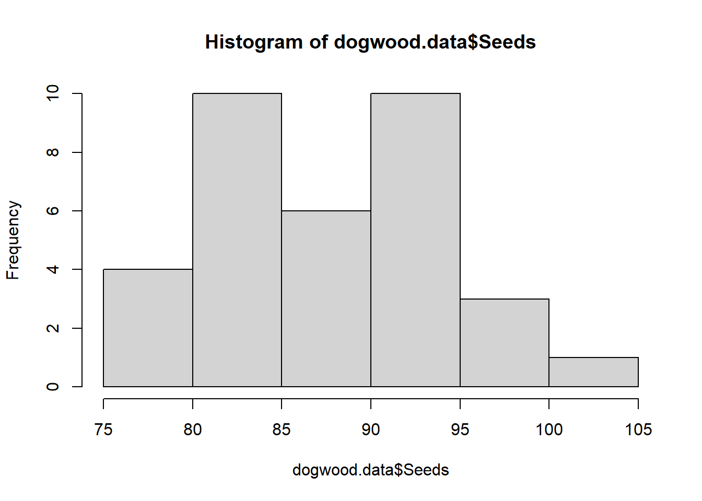

library( tidyverse )
library( forcats )NonParametric & Counting Statistics
Abstract
Counting and Non-Parametric Statistics are essential when you either have categorical data for both predictors and response variables OR your data that you wanted to use a parametric approach (correlation, regression, ANOVA) is not well-behaved and will continue to conform to the assumptions of those models (e.g., normality, homoscedasticity, etc.).
This assignment covers the materials in the lecture on Counting Statistics & Other Non-Parametric Approaches. As is expected, answer this using a Quarto document, push it to your repository, and turn in the URL.
Assignment
For each of the following questions, please provide your analysis and an interpretation (e.g., written as you would in a scientific publication). If it helps to describe your result, add tables or figures to help make your case. For every case, explain why you chose the particular analysis you did and demonstrate the reasons from the data.
Run Libraries
Question 1
The FDA has suggested a change in a medication that has been shown to have detrimental side effects in half of the patients. A clinical trial was conducted with nineteen patients; only three reported side effects. Did the change make a significant difference?
Binomial Setup & Plot
#prob of side effect = 50%
#side effect patients = 3
#non-side effect patients = 16
side_effect <- 3
nonside_effect <- 16
samples <- c(side_effect, nonside_effect)
p_side_effect <- 0.5
df <- data.frame( Counts = c( samples, 0.5 * sum(samples), ( (1-0.5) * sum(samples) )),
Drug.Response = c("Side-effect", "Other", "Side-effect", "Other"),
Group = c("Observed","Observed", "Expected", "Expected") )
ggplot( df,
aes(Drug.Response,Counts, fill=Group) )+
geom_bar( position="dodge", stat="identity") 
Binomial Test
A binomial test works best for this question because we have a number of “successful occurrences”, a number of “total observations”, and a “probability” of what we expect our results to be. There are also only two outcomes/groups (bi) in this data.
fit <- binom.test(x=samples, p = p_side_effect )
fit
Exact binomial test
data: samples
number of successes = 3, number of trials = 19, p-value = 0.004425
alternative hypothesis: true probability of success is not equal to 0.5
95 percent confidence interval:
0.03382625 0.39578455
sample estimates:
probability of success
0.1578947 Results
The results of the binomial test suggest that the probability of a detrimental side effect are not equal to 50%, and we reject the null hypothesis (p = 0.5). The test instead showed that there is a range of 3.4-39.6% chance of having a side effect in the clinical trial. The bar chart backs this up by showing the expected vs observed results of the trials and the expected number of side effects being much lower than observed. The change did make a significant difference.
Question 2
Two different environmental remediation treatments are evaluated for the impacts on turbidity (measured using the Nephelometric Turbidity Unit or NTU). For regulatory reasons, turbidity is binned into four groups based on NTU: 0-15 ntu, 16-22 ntu, 23-30 ntu, and 31+ ntu. Do both treatments have the same impact on turbidity? Explain.
Read Data
read_csv( "ntu_data.csv") -> ntu.dataData Visualization
hist(ntu.data$NTU)
Mann-Whitney Test
A Mann-Whitney test is used when there are two independent groups of data that are not normally distributed. The data for this question is heavily skewed to the left, and we have two groups (treatments).
#str(ntu.data)
ntu.data$Treatment <- factor(ntu.data$Treatment, levels = c("Treatment A", "Treatment B"), labels = c("A", "B"))
fit.NTU <- wilcox.test(NTU ~ factor(Treatment), data = ntu.data)
fit.NTU
Wilcoxon rank sum test with continuity correction
data: NTU by factor(Treatment)
W = 2765, p-value = 1.285e-05
alternative hypothesis: true location shift is not equal to 0Results
Both treatments do not have the same impact on turbidity. Due to the non-normal distribution of the data, a Mann-Whitney Test was used. The results of the Mann-Whitney Test tells us that there is a statistically significant difference between the two groups (A and B) (P-Value = 1.285e-05). Meaning, we reject the null hypothesis that both groups have an identical distribution.
Question 3
A dozen graduate students tried to determine if there was a relationship between their undergraduate GPA and their scores on the Graduate Records Examination. Look at these data and determine the extent to which they are related. Explain.
Read Data
read_csv( "grad_school.csv") -> grad.dataData Visualization
hist(grad.data$GRE)
hist(grad.data$GPA)
Spearmans Cor.test
Due to the non-normal distribution of the data, parametric tests cannot be used. Since there are two variables here, a correlation test would make sense if the data was “normal”. The spearmans correlation test is one for non-normally distributed data, and a good choice for this data.
Q3.spearman <- cor.test (grad.data$GPA, grad.data$GRE,
method = "spearman")Warning in cor.test.default(grad.data$GPA, grad.data$GRE, method = "spearman"):
Cannot compute exact p-value with tiesQ3.spearman
Spearman's rank correlation rho
data: grad.data$GPA and grad.data$GRE
S = 118.83, p-value = 0.04593
alternative hypothesis: true rho is not equal to 0
sample estimates:
rho
0.5845215 Results
Using the spearmans cor.test, we have a slightly significant relationship between GPA and GRE, P-Value = 0.04593. The spearmans rho value tells us that when one variables increases, the other variable also tends to increase, and vise versa (rho = 0.5845).
Question 4
You are looking at fruit yield on dogwood. You designed an experiment with four different treatments and measured the total yield in germinated seeds. Are there differences in yield? Explain.
Read Data
read_csv("DogwoodSeeds.csv") -> dogwood.dataData Visualization
dogwood.data |>
mutate( Treatment = factor( Treatment ) ) |>
mutate( Treatment = fct_recode(Treatment,
A="1",
B="2",
C="3",
D="4")) -> dogwood.data4
ggplot( dogwood.data4, aes(Treatment, Seeds) ) +
geom_boxplot(notch=TRUE)
dogwood.data$Treatment <- as.numeric(factor(dogwood.data$Treatment))
hist(dogwood.data$Treatment)
hist(dogwood.data$Seeds)
Kruskal-Wallis Test
The reason for choosing the Kruskal-Wallis Test is because of the non-normal distribution of the data along with the number of “groups” (treatments) in the seed data. The K-W test is essentially a Mann-Whitney Test that is designed for more than two groups, perfect for the 4 groups in this dataset.
fit.dogwood <- kruskal.test( Seeds ~ Treatment, data=dogwood.data4 )
fit.dogwood
Kruskal-Wallis rank sum test
data: Seeds by Treatment
Kruskal-Wallis chi-squared = 25.629, df = 3, p-value = 1.141e-05Results
According to the Kruskal-Wallis test, there are sizable differences in the different treatments, as the chi-squared is a larger number of 25.63. This finding is statistically significant as the associated p-value was 1.141e-05 indicating that there is a significant difference in the distributions of the treatments.